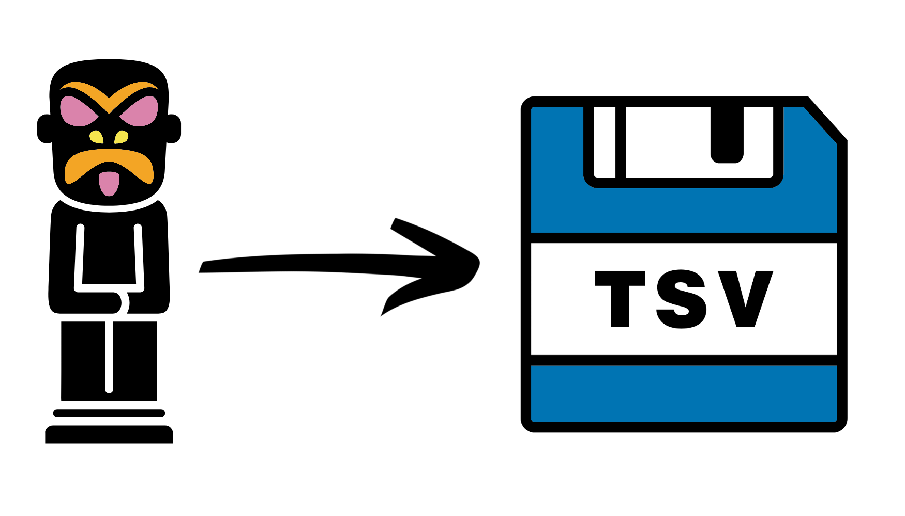

Chapter 2 Exporting Artifacts

Artifact files are very useful when carrying out analysis in QIIME2. However they are impossible to use (I think) with anything outside of QIIME2. Therefore it can be very useful to know how to export data out of Artifact files.
This section will show how to export various different artifact files into text files. However, for some data types they must be converted into a BIOM file first.
2.1 BIOM files
BIOM stands for BIological Observation Matrix. BIOM files generally contain abundance tables. These files are not human-readable but can be used with certain programs. Here we will only manipulate them in such ways to get the text files we need.
For more information on the BIOM format please see: https://biom-format.org/
We will be using the command biom convert to convert BIOM files to TSV (Tab Separated Value) files. For more info on this please see: https://biom-format.org/documentation/biom_conversion.html
2.2 Setup
First copy a new directory that will contain all the QIIME2 output you need and then change directory to it.
cp -r /pub39/tea/matthew/NEOF/16s_workshop/16s_export ~/Metagenetics
cd ~/Metagenetics/16s_exportBefore we start exporting it is best to make a few directories.
mkdir export
mkdir qiime2_exports
mkdir final_exportsexport: This directory is where we will point the variousqiime tools exportcommands. You can only specify an output directory for this command and the command will give the exported file very generic names. This makes it very easy to overwrite files when using this command.qiime2_exports: For some of the exported files we will move and rename them fromexportto this directory. This is an temporary directory for files we will not want at the end (mostly BIOM files).final_exports: This directory will contain the final exported files we would generaly want to keep.
2.3 Abundance table export
First we will export our ASV abundance table. We will have to convert the BIOM file produced by QIIME2 to a TSV file.
Export the table to a directory. This will create a BIOM file called feature-table.biom.
qiime tools export --input-path table-dada2.qza --output-path exportMove the created file whilst renaming it.
mv export/feature-table.biom qiime2_exports/ASV_table.biomFinall we will use biom convert to create our TSV file.
biom convert \
-i qiime2_exports/ASV_table.biom \
-o final_exports/ASV_table.tsv \
--to-tsvThe option --to-tsv (or alternative) must be provided or the command will not run and only complain.
Use a text viewer/editor of your choice to inspect the final file. Make sure to do this for all the files in this tutorial.
2.4 Taxonomy info export

Exporting the taxonomy info.
qiime tools export --input-path taxonomy.sklearn.qza \
--output-path export
#Move the produced tsv file to the final_exports directory
mv export/taxonomy.tsv final_exports2.5 Representative sequences export
Export the representative sequences to a fasta file.
qiime tools export --input-path rep-seqs-dada2.qza \
--output-path export
#Move and rename the produced fasta file
mv export/dna-sequences.fasta final_exports/ASV_rep_seqs.fasta2.6 Phylogenetic tree export
The below exports the specified phylogenetic tree into a newick format file. For more info on the Newick format please see: https://en.wikipedia.org/wiki/Newick_format
qiime tools export --input-path rooted-tree.qza \
--output-path export
#Move and rename the exported newick file
mv export/tree.nwk final_exports/fasttree_rooted_tree.nwk2.7 ASV table with taxonomy export
This step will produce a TSV file containing the ASV abundance table with the last column containing the taxonomy assignment of the ASV.
To carry out this step you will need the BIOM format produced in the abundance table export and the exported taxonomy file.
We need to change the header of the taxonomy file for it to be compatible with the biom command.
First create a copy which we will edit
cp final_exports/taxonomy.tsv final_exports/taxonomy.header.tsvThen using a text editor of your choice (nano, vim, emacs, etc.) change the first and second column headers to #OTUID and taxonomy.
Now we can create a new BIOM file which contains the taxonomy information
biom add-metadata \
--input-fp qiime2_exports/ASV_table.biom \
--observation-metadata-fp final_exports/taxonomy.header.tsv \
--output-fp qiime2_exports/ASV_table.tax.biomExport the newly created BIOM file. We will need to include option --header-key taxonomy to include the taxonomy info in the newly TSV file.
biom convert \
-i qiime2_exports/ASV_table.tax.biom \
-o final_exports/ASV_table.tax.tsv \
--header-key taxonomy \
--to-tsv2.8 Rarified table export
You can export a rarefied table. The first step of this is to rarefy our ASV table artifact.
The option --p-sampling-depth is our rarefaction threshold. We will choose 20,000 for this example but make sure to pick an appropriate one for your own projects.
qiime feature-table rarefy \
--i-table table-dada2.qza \
--p-sampling-depth 20000 \
--o-rarefied-table table-dada2.rarefied_20000.qzaAfter that it is the normal export and convert commands. To be fancy we will include the taxonomy information in the final file.
#Qiime tools export
qiime tools export \
--input-path table-dada2.rarefied_20000.qza \
--output-path export
#Move and rename exported biom
mv export/feature-table.biom qiime2_exports/ASV_table.rarefied_20000.biom
#Add taxonomy info to biom file
#Ensure to use the taxonomy with the altered headers
biom add-metadata \
--input-fp qiime2_exports/ASV_table.rarefied_20000.biom \
--observation-metadata-fp final_exports/taxonomy.header.tsv \
--output-fp qiime2_exports/ASV_table.rarefied_20000.tax.biom
#Convert biom to tsv with taxonomy
biom convert \
-i qiime2_exports/ASV_table.rarefied_20000.tax.biom \
-o final_exports/ASV_table.rarefied_20000.tax.tsv \
--header-key taxonomy \
--to-tsv2.9 Relative abundance table export
Instead of an abundance table you may want a relative abundance table. Thankfully this can easily be done in QIIME 2 with the following command.
Note: You will most likely want to get the relative abundance from a rarefied table.
qiime feature-table relative-frequency \
--i-table table-dada2.rarefied_20000.qza \
--o-relative-frequency-table table-dada2.rarefied_20000.relabund.qzaThen you can export it the same way as the rarefied abundance table.
#Qiime tools export
qiime tools export \
--input-path table-dada2.rarefied_20000.relabund.qza \
--output-path export
#Move and rename exported biom
mv export/feature-table.biom \
qiime2_exports/ASV_table.rarefied_20000.relabund.biom
#Add taxonomy info to biom file
biom add-metadata \
--input-fp qiime2_exports/ASV_table.rarefied_20000.relabund.biom \
--observation-metadata-fp final_exports/taxonomy.header.tsv \
--output-fp qiime2_exports/ASV_table.rarefied_20000.relabund.tax.biom
#Convert biom to tsv with taxonomy
biom convert \
-i qiime2_exports/ASV_table.rarefied_20000.relabund.tax.biom \
-o final_exports/ASV_table.rarefied_20000.relabund.tax.tsv \
--header-key taxonomy \
--to-tsv2.10 Taxonomy abundance table export
The last recipe I will show you is how to create and then export a taxonomy abundance table.
First we collapse our ASV table to a specific taxonomy level. This is carried out by specifying a number to the option --p-level in the command below. With Silva and Greengenes the numbers normally correspond to:
- Kingdom
- Phylum
- Class
- Order
- Family
- Genus
- Species
Be careful though as with some taxonomy databases the levels are not consistent between different organisms. This occurs if sub-level information (such as sub-order, sub-family etc.) is included in some but not all taxonomic classifications. This could mean that the 5th level taxonomy of one organisms could be its sub-order whilst another’s could be its family. Check your export/taxonomy.tsv to see if this could be an issue or not.
We will now run our taxonomy collapse command on our rarefied table to produce a Family abundance table.
Note: The below command can not be run on a relative abundance table. You will have to run the relative frequency command on its output if you want relative abundance family table.
qiime taxa collapse \
--i-table table-dada2.rarefied_20000.qza \
--i-taxonomy taxonomy.sklearn.qza \
--p-level 5 \
--o-collapsed-table table-dada2-family.rarefied_20000.qzaThen you can export it in a similar way as the other tables. However, we should not include the step that adds the taxonomy for this.
#Qiime tools export
qiime tools export \
--input-path table-dada2-family.rarefied_20000.qza \
--output-path export
#Move and rename exported biom
mv export/feature-table.biom qiime2_exports/family_table.rarefied_20000.biom
#Convert biom to tsv with taxonomy
biom convert \
-i qiime2_exports/family_table.rarefied_20000.biom \
-o final_exports/family_table.rarefied_20000.tsv \
--to-tsvI hope this is a nice quick reference for your future use.